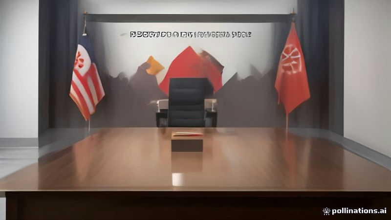

এপেক শীর্ষ সম্মেলনে শি ট্রাম্প ও পুতিনকে স্বাগত জানালেন
Al Jazeera English, NPR World, DW · 2026-11-19
AI-generated illustrationযুক্তরাষ্ট্র, রাশিয়া ও চীনের নেতারা চীনে প্রথম ত্রিপক্ষীয় শীর্ষ সম্মেলনের জন্য মিলিত হবেন।
আল জাজিরা ইংরেজি অনুযায়ী, এপেক শীর্ষ সম্মেলনে চীনের প্রেসিডেন্ট শি জিনপিং যুক্তরাষ্ট্রের প্রেসিডেন্ট ডোনাল্ড ট্রাম্প এবং রাশিয়ার প্রেসিডেন্ট ভ্লাদিমির পুতিনকে স্বাগত জানিয়েছেন।
এনপিআর ওয়ার্ল্ডের মতে, প্রেসিডেন্ট ট্রাম্প বৃহস্পতিবার উভয় নেতার সঙ্গে ঐতিহাসিক যৌথ বৈঠকের জন্য নির্ধারিত আছেন।
ডিডাব্লিউ জানিয়েছে, চীনে প্রথমবারের মতো অনুষ্ঠিত হতে যাচ্ছে ত্রিপক্ষীয় শীর্ষ সম্মেলন, যা আজ অনুষ্ঠিত হবে এবং সরাসরি সম্প্রচার হবে।
Read the original reporting at the links above.
English version
Xi greets Trump and Putin at APEC ahead of historic trilateral summit
Chinese President Xi Jinping greeted U.S. President Donald Trump and Russian President Vladimir Putin at the APEC summit, according to Al Jazeera English.
President Trump is scheduled to meet both leaders on Thursday in what NPR World describes as a historic joint meeting.
DW reports that the three‑way summit, the first ever held in China, is set for today, with live coverage planned.